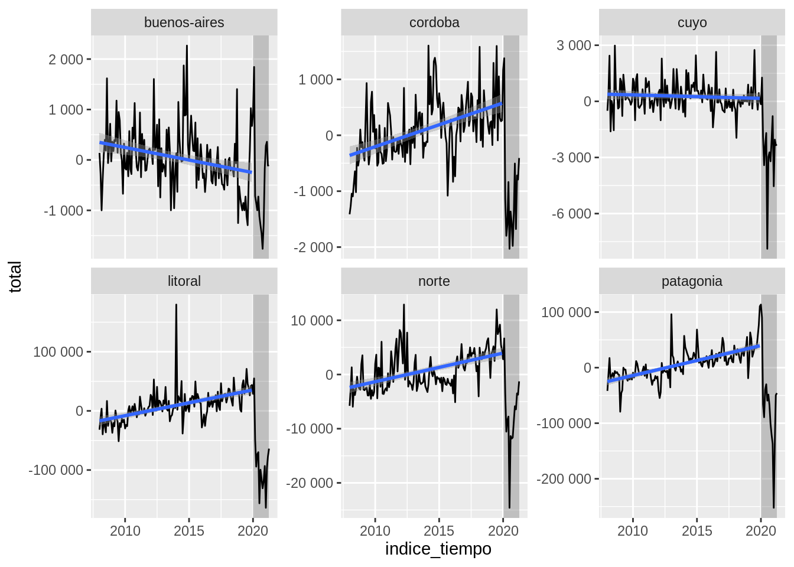

Capítulo 11 Apariencia de gráficos
11.1 Escalas
Previamente comentamos que el mapeo de una variable en un elemento geométrico, por ejemplo cuando le asignamos distintos colores a los puntos que representan cada continente, usa una escala para definir, en este caso, que color le corresponde a cada elemento.
También cambiamos la apariencia del relleno (o fill) de barras y la forma de los puntos (o shape).
Para esto, {ggplot2} siempre usa una escala que podemos modificar de acuerdo a nuestro gusto y teniendo en cuenta cómo queremos comunicar nuestros resultados.
Por supuesto, modificar una escala implica sumar una nueva capa al gráfico sumando una nueva función.
Todas las funciones de escala comienzan con scale (de escala en inglés), el tipo de apariencia que queremos modificar (color, fill, shape, etc) y en muchos casos un nombre o una característica de esa escala.
Para mostrar como funciona, vamos a utilizar la base de datos de países y con suerte al final de este documento tendremos un gráfico listo para publicar.
## Rows: 1704 Columns: 6## ── Column specification ────────────────────────────────────────────────────────
## Delimiter: ","
## chr (2): pais, continente
## dbl (4): anio, esperanza_de_vida, poblacion, pib_per_capita##
## ℹ Use `spec()` to retrieve the full column specification for this data.
## ℹ Specify the column types or set `show_col_types = FALSE` to quiet this message.11.1.1 Escala de colores y otras
Lo primero que podemos hacer es cambiar el color de los puntos de a cuerdo al continente.
paises %>%
filter(anio == 2007) %>%
ggplot(aes(pib_per_capita, esperanza_de_vida)) +
geom_point(aes(color = continente))
Pero esta escala de colores que usa {ggplot2} por defecto no es de las mejores, de hecho las personas que tienen daltonísmo muy posiblemente no logren diferenciar todos los puntos. Una escala o paleta de colores muy usada es viridis que fue creada justamente para resolver este y otros problemas. También existe otra gran familia de paletas de colores llamada ColorBrewer.
Vamos a probar la paleta “Dark2” de ColorBrewer, esta paleta es qualitativa y es justo lo que necesitamos para identificar elementos en categorías como los continentes.
Cómo estamos modificando el color, la función a usar será scale_color_brewer():
paises %>%
filter(anio == 2007) %>%
ggplot(aes(pib_per_capita, esperanza_de_vida)) +
geom_point(aes(color = continente)) +
scale_color_brewer(type = "qual", palette = "Dark2")Nuestro gráfico va quedando mejor y podemos aprovechar la capacidad de {ggplot2} de mapear variables a los elementos del gráfico y mostrar la población de cada país.
Desafío
A modo de prueba, cambia la paleta de colores actual por la de Viridis.
Para eso tenés que usar scale_color_viridis_d().
La “d” del final viene de discrete y se usa para variables discretas o categorías, mientas que si los datos son continuos, se usa “c”.
paises %>%
filter(anio == 2007) %>%
ggplot(aes(pib_per_capita, esperanza_de_vida)) +
geom_point(aes(color = continente, size = poblacion)) +
scale_color_brewer(type = "qual", palette = "Dark2")
Esto nos da más información, pero al mismo tiempo vemos que los puntos se superponen.
Vamos a arreglar eso agregando transparencia y de paso modificar el tamaño de los puntos con la escala correspondiente scale_size() y sacar la legenda con guide = NULL.
paises %>%
filter(anio == 2007) %>%
ggplot(aes(pib_per_capita, esperanza_de_vida)) +
geom_point(aes(color = continente, size = poblacion), alpha = 0.5) +
scale_color_brewer(type = "qual", palette = "Dark2") +
scale_size_area(max_size = 15, guide = NULL)
11.1.2 Escalas de ejes
Tal vez notaste que el comportamiento entre la esperanza de vida y el PBI no es lineal, de hecho el PBI varía mucho mientras que la esperanza de vida va apenas entre 40 y 80 y algo. Eso puede esta indicando que el PBI tiene un comportamiento logarítmico y si bien podríamos transformar los datos antes de hacer el gráfico, también podemos elegir una escala logarítmica para el eje del gráfico correspondiente.
paises %>%
filter(anio == 2007) %>%
ggplot(aes(pib_per_capita, esperanza_de_vida)) +
geom_point(aes(color = continente, size = poblacion), alpha = 0.5) +
scale_color_brewer(type = "qual", palette = "Dark2") +
scale_size_area(max_size = 15, guide = NULL) +
scale_x_log10()En este caso las escalas que modifican los ejes justamente comienzan con scala_x_ o scale_y_ según sea el caso.
Y por supuesto hay una variedad importante de escalas con muchas opciones.
11.2 Elementos de texto
Ya sumamos 3 escalas, pero el gráfico ya se ve muy bien.
¿Cómo hacemos si queremos identificar países individuales?
Por ahora es difícil, pero podríamos agregar etiquetas de texto con el nombre de cada país al lado de cada punto usando geom_text(), y en este caso la apariencia está dada por label o etiqueta:
paises %>%
filter(anio == 2007) %>%
ggplot(aes(pib_per_capita, esperanza_de_vida)) +
geom_point(aes(color = continente, size = poblacion), alpha = 0.5) +
scale_color_brewer(type = "qual", palette = "Dark2") +
scale_size_area(max_size = 15, guide = NULL) +
scale_x_log10() +
geom_text(aes(label = pais)) 
Pero nos olvidamos que tenemos casi 200 países, es razonable agregarle etiquetas a todos.
Pero podríamos querer resaltar algunos, tal vez los de un continente en particular o los que cumplen con la condición de tener las mayores poblaciones del mundo.
Para eso vamos a generarnos una nueva tabla con los países que queremos resaltar y de paso usarla dentro de geom_text().
mucha_poblacion <- paises %>%
filter(anio == 2007) %>%
filter(poblacion > 1000000000) # Países con más de un billón de habitantes!
paises %>%
filter(anio == 2007) %>%
ggplot(aes(pib_per_capita, esperanza_de_vida)) +
geom_point(aes(color = continente, size = poblacion), alpha = 0.5) +
scale_color_brewer(type = "qual", palette = "Dark2") +
scale_size_area(max_size = 15, guide = NULL) +
scale_x_log10() +
geom_text(aes(label = pais),
data = mucha_poblacion) # Esta capa usa la tabla mucha_población!
Del código anterior surge algo muy importante: es posible generar capas en un gráfico usando una data.frame distinto al que usamos para graficar las capas anteriores. Esto es útil principalmente para definir etiquetas o resaltar determinadas observaciones.
Y el truco está en que ambos data.frames tienen las variables pib_per_capita y esperanza_de_vida y entonces {ggplot2} puede identificar en que parte del gráfico (en que valores de x y en que valores de y) colocar cada elemento.
Veamos ahora una (de varias) maneras agregar o modificar elementos de texto en el gráfico.
Vamos a usar una nueva función (y una nueva capa!), labs():
paises %>%
filter(anio == 2007) %>%
ggplot(aes(pib_per_capita, esperanza_de_vida)) +
geom_point(aes(color = continente, size = poblacion), alpha = 0.5) +
scale_color_brewer(type = "qual", palette = "Dark2") +
scale_size_area(max_size = 15, guide = NULL) +
scale_x_log10() +
geom_text(aes(label = pais), data = mucha_poblacion) +
labs(title = "Paises del mundo",
subtitle = "Año 2007",
caption = "El tamaño de cada circulo representa la población.",
x = "PBI per capita",
y = "Esperanza de vida",
color = "")
Agregamos un título, un subtítulo, el epígrafe de la figura (caption) para las aclaraciones y cambiamos el nombre de los ejes para que se vean mejor. Pero ademas eliminamos el nombre de la leyenda porque era un poco redundante.
11.3 Temas
Nos queda una última cosa por hacer, cambiar la apariencia global del gráfico. {ggplot2} tiene muchos temas disponibles y para todos los gustos. Pero además hay otros paquetes que extienden las posibilidades, por ejemplo {ggthemes}.
Por defecto {ggplot2} usa theme_grey(), probemos theme_light():
paises %>%
filter(anio == 2007) %>%
ggplot(aes(pib_per_capita, esperanza_de_vida)) +
geom_point(aes(color = continente, size = poblacion), alpha = 0.5) +
scale_color_brewer(type = "qual", palette = "Dark2") +
scale_size_area(max_size = 15, guide = NULL) +
scale_x_log10() +
geom_text(aes(label = pais), data = mucha_poblacion) +
labs(title = "Paises del mundo",
subtitle = "Año 2007",
caption = "El tamaño de cada circulo representa la población.",
x = "PBI per capita",
y = "Esperanza de vida",
color = "") +
theme_light()
Ahora es tu turno. Elegí un tema que te guste y probalo. Además, si se te ocurre algún título mejor modificalo!
{kind=link}
Junto con las funciones theme_...(), hay una función llamada theme() que permite cambiar la apariencia de cualquier elemento del gráfico.
Tiene casi infinitas opciones y si algún momento te desvelas intentando cambiar esa línea o ese borde, seguro que theme() tiene alguna opción para hacer eso.